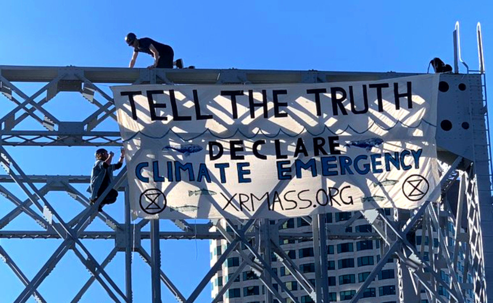
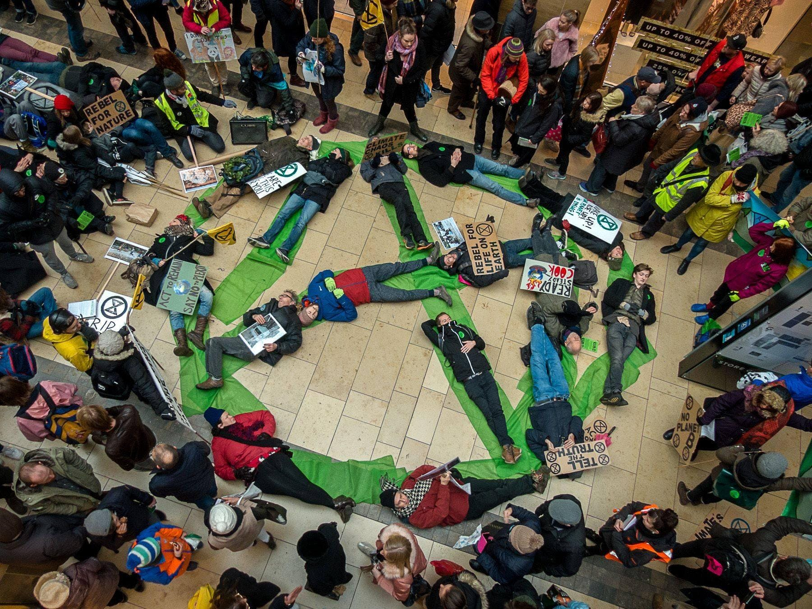

Radical Action
A Call for Direct Action
We have the technological solutions to this problem, but deeply entrenched and well hidden fossil fuel influence on our government has meant that climate change has become a politicized issue, rather than a public health and safety one. Hugely powerful companies have planted the seed of doubt in the public’s mind through institutions and professions that we had grown to trust. If oil companies are deciding what the facts are about climate change, how can we fight them? We need to get fossil fuel influence out of our government.
Climate protests have escalated in enormously in the past couple years as people wake up to the new movement. They have been successful in changing the language of the debate to their terms, like climate emergency or climate crisis rather than climate change, and the awareness of the timeline of the issue, with phrases like 11 years left, in reference to the 11 years that we have to get to carbon neutral. Taking part in actions can help alleviate some stress you might feel about the lack of action being taken to combat this issue. Plus, it’s really fun. You can find a community of people by getting involved in direct action, and the protests mainly consist of hanging out, making art, singing and chanting with a bunch of friends.
 .JPG)